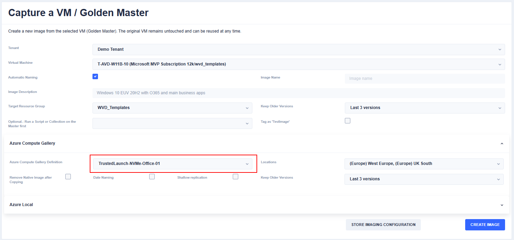

From SCSI to NVMe in Azure Virtual Desktop - Reuse your current golden master VM - or convert it

Why NVMe Matters
- NVMe (Non-Volatile Memory Express) is a modern storage protocol designed for non-volatile flash memory. Compared to legacy SCSI, it delivers significantly higher IOPS and throughput. For I/O-intensive workloads, the performance gain is substantial (Microsoft Docs: NVMe overview).
- With the v6 VM families (e.g., Dlsv6, Dldsv6), NVMe-backed local storage is now widely available. Benefits include:
- Up to 5× more CPU cache
- Up to 54 Gbps networking
- Up to 400k remote disk IOPS
- Up to 12 GB/s remote throughput via Azure Boost
(Microsoft Tech Community)
- Support for ephemeral OS disks with local NVMe storage is now GA, offering:
- Up to 10× faster OS disk performance
- Ultra-low latency
- Modern processor architeture in comparision to the older ephemeral VM sizes
- Very fast reimaging
Perfect for stateless scaling scenarios like Azure Virtual Desktop (AVD)
(Microsoft Tech Community).
The Challenge
It could be so easy to enjoy the new VM sizes — with either network disks or ephemeral disks. However, if you already maintain images and golden masters for Azure Virtual Desktop (AVD), you’ll quickly realize that you cannot simply reuse them.
Why? Because the disk architecture changes between your older images and the new NVMe-based VM families.
That leaves you with two main options:
- Create new golden masters directly on NVMe VM sizes, or
- Create new images of your existing golden masters and store them in an NVMe-enabled Azure Compute Gallery definition
Prepare an Azure Compute Gallery Definition
- Navigate to your Azure Compute Gallery (create a new one if necessary)
- At the top, select Add -> VM Image definition
- Configure the definition and ensure you select:
- Higher storage performance with NVMe
- For secure boot masters and hosts: Trusted Launch
- Higher storage performance with NVMe
The following screenshot shows a secure boot + NVMe-enabled definition.
Finally:
- Click Review and Create -> Create.
If you are using Hydra for Azure Virtual Desktop, you can directly capture your existing golden master into this new compute gallery definition. Hydra will capture the image without destroying the golden master, so you can safely reuse your existing setup. 
From here, you can use the gallery definition version to roll out new NVMe-based session hosts or virtual machines — with or without ephemeral disks.
Notes from the Field
During my tests, some rollouts failed with a bluescreen (both with custom images and with Microsoft marketplace images). After a while, the rollout worked again. This suggests that there may occasionally be stability issues with the new v6 Boost VMs. It's good to have this in mind. Also good to know: You can use gallery definitions to migrate existing VMs. In this case use a "Spezialized" gallery definition. Please remember that maybe not any Windows version comes with the right drivers.
What’s Next
Follow me if you want to learn more about:
- How to increase performance in AVD with NVMe, and
- How to manage the Windows swapfile in a smarter way for even greater efficiency. 🚀+